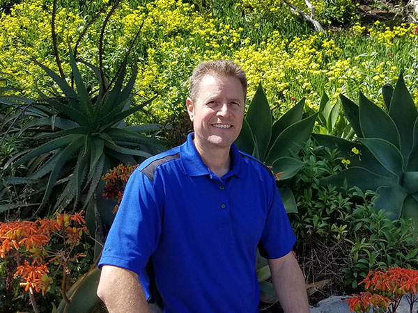

About Me

The Early Years
I was born and raised in Los Angeles County. I met my wife when we were high school seniors and have now been together over 30 years. I entered the technology industry during the dot.com era and was hooked. I've since obtained a Computer Science degree in Web Design and multiple certifications in Web Development and Graphic Design. I've been working in the Graphic and Web fields for more than a decade.
The Awesome Years
I currently live in Irvine with my wife and two dachshunds. We're very proficient in home remodeling and can usually be found working on weekend projects. For fun we hit the local bike trails, swim, play bocce ball and do our best at racket sports. We enjoy travel and exploration and have been to most of the popular attractions of the southwest including the Grand Canyon, Sedona, Monument Valley, Moab, Zion, Bryce and Mesa Verde to name a few. We've been all over California gathering info for our California travel website, CaliforniaRevealed.com.
Giving Back
I feel privileged to be where I am in life. I realize that there are others who struggle daily just to make ends meet or those who have health issues that prevent them from leading a normal life. Indirectly, we donate annually to favorite organizations like Make-A-Wish, Ronald McDonald House, Semper Fi Fund and several more. More directly, in 2015, I took the initiative to contact the Wounded Warrior Project at Camp Pendleton to see if they would be interested in Web Development training for wounded soldiers. The Marine Corps accepted my offer so I spent much of 2016 driving to Camp Pendleton to feed as much of my knowledge to soldiers who were interested. I continue to mentor these soldiers as they transition into civilian life and the field of Web Development.